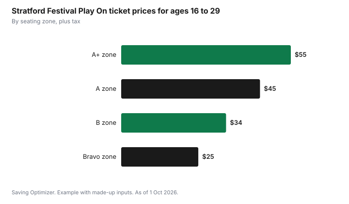

Entertainment · Canada
Stratford and Shaw Festival 2027: Cheaper Tickets and Planning a Theatre Trip

The cheapest way to see the 2027 Stratford Festival or Shaw Festival in Ontario is to book early in a discount you qualify for, such as Stratford's Play On tickets for ages 16 to 29 (from $25 plus tax) or Shaw's preview, under-35 and youth prices, and to choose midweek performances, as of 1 October 2026. Stratford's 75th season runs from 28 April to 28 November 2027, and public sales open on 15 November 2026 after a members' advance period, according to the festival. Shaw announced its 2027 playbill on 25 August 2026. For many visitors, travel, a hotel night and meals in Stratford or Niagara-on-the-Lake cost more than the tickets, so plan the whole trip, not only the seats.
Key takeaways
- Stratford 2027: 28 Apr to 28 Nov 2027, 13 productions; public on-sale 15 Nov 2026 after a members' advance period.
- Stratford Play On (ages 16 to 29): $25, $34, $45 or $55 by seating zone, plus tax.
- Stratford rush: same day, up to 4 tickets from two hours before; 10% off A+, 20% off A, 50% off B seats.
- Shaw 2027 playbill announced 25 Aug 2026; check 2027 prices when they are released.
- Shaw's 2026 offers included previews from $30, $35 seats for ages 35 and under and $25 youth tickets with an adult.
- Example with made-up inputs: a day trip versus an overnight for two.
The 2027 seasons
Stratford's 2027 season marks the festival's 75th year. It includes 13 productions: Hamlet, Mary Poppins, Chicago, Wolf Hall, Bring Up the Bodies, Present Laughter (with Eric McCormack, from 9 October to 28 November 2027), Anne of Green Gables, Jacob Two-Two Meets the Hooded Fang, The Taming of the Shrew, The Merchant of Venice, Playing Shylock, All in the Telling and Almighty Voice and His Wife. Hamlet opens on 13 July 2027. Matinees are generally at 1:30 p.m. and evening shows at 7:30 p.m. Mary Poppins has a presale registration for people who want early notice.
The Shaw Festival in Niagara-on-the-Lake announced its 2027 season on 25 August 2026. Productions include South Pacific, The Color Purple, Arsenic and Old Lace, Jumpers, Deathtrap, Arms and the Man, Grimm Tales, What Every Woman Knows, Intimate Apparel and Goblin:Pygmalion. Holiday programming had not been announced as of 1 October 2026.
| Detail | Stratford Festival | Shaw Festival |
|---|---|---|
| Location | Stratford, Ont. | Niagara-on-the-Lake, Ont. |
| 2027 season | 28 Apr to 28 Nov 2027 | Announced 25 Aug 2026; check dates by production |
| Public on-sale | 15 Nov 2026, after members' advance | Check the festival for 2027 on-sale timing |
| Large musicals | Mary Poppins, Chicago | South Pacific, The Color Purple |
| Youth and young adult offer | Play On, ages 16 to 29 | Under-35 seats and youth tickets (2026 offers) |
Stratford discounts
Stratford's Play On program is the best value for anyone aged 16 to 29. Tickets cost $25 in the Bravo zone, $34 in B, $45 in A and $55 in A+, plus tax. Rush tickets offer same-day savings for anyone: up to four tickets, released from two hours before the performance, with 10% off A+ seats, 20% off A seats and 50% off B seats, subject to availability. Student groups can attend selected midweek matinees from $19. Members, who make a donation to the festival, get access to tickets before the public on-sale, which helps for the most popular shows.
| Offer | Who | Price or discount |
|---|---|---|
| Play On, Bravo zone | Ages 16 to 29 | $25 plus tax |
| Play On, B zone | Ages 16 to 29 | $34 plus tax |
| Play On, A zone | Ages 16 to 29 | $45 plus tax |
| Play On, A+ zone | Ages 16 to 29 | $55 plus tax |
| Rush | Anyone, same day, up to 4 tickets | 10% off A+, 20% off A, 50% off B |
| Student midweek matinees | School groups | From $19 |
| Members' advance | Festival members | Early booking before 15 Nov 2026 |

Shaw discounts
Shaw had not published its full 2027 pricing as of 1 October 2026. Its 2026 ways to save give an idea of the offers to look for: early booking prices until 31 January, preview performances up to 30% off and from $30, $35 Blue seats for people 35 and under, $25 tickets for youth 18 and under with an adult ticket, senior prices from $44 and student prices of $25 at selected performances, and regular tickets from $40. A Season's Pass was offered at $625 or $750. Check Shaw's website for the 2027 versions of these offers before you book; prices and rules can change.
| Offer (2026 season) | Who | Price or discount |
|---|---|---|
| Early booking | Anyone, until 31 Jan | Lower early prices |
| Previews | Anyone | Up to 30% off, from $30 |
| Blue seats | Ages 35 and under | $35 |
| Youth | 18 and under, with an adult ticket | $25 |
| Seniors | Selected performances | From $44 |
| Students | Selected performances | $25 |
| Season's Pass | Frequent visitors | $625 or $750 |
Timing your booking
- Popular musicals and star-led shows sell the best seats first; book early for those.
- Previews, early in each production's run, are often cheaper.
- Midweek matinees usually have more choice and lower demand.
- Rush tickets suit flexible locals or visitors already in town.
- Fall performances after the summer peak can be easier to book, and lodging can cost less.
The rest of the trip: travel, lodging and food
For a day trip, the main extra costs are fuel or transit and a meal. For an overnight, a hotel or bed and breakfast is usually the largest single cost, often more than two tickets. Stratford and Niagara-on-the-Lake both have peak summer and weekend pricing. Booking lodging when you book tickets, choosing a midweek night, or staying in a nearby town can reduce the cost. Accommodation taxes and fees vary by municipality; the hotel and short-term rental taxes guide explains what to expect on the bill.
- Pick a matinee to make a day trip possible and skip the hotel.
- Pack a picnic; both towns have parks near the theatres.
- Check parking costs and whether the theatre has nearby free street parking.
- Share driving and lodging with friends to split costs.
Example with made-up inputs: a day trip versus an overnight for two
These numbers are an example with made-up inputs. They are not real ticket, hotel or restaurant prices. Two adults, one aged 27 and one 45, plan a Stratford visit.
| Item | Matinee day trip | Evening show and overnight |
|---|---|---|
| Tickets (one Play On, one regular) | $34 + $90 = $124 | $34 + $90 = $124 |
| Fuel and parking | $60 | $60 |
| Meals | $60 (picnic lunch, takeout dinner) | $180 (two restaurant meals and breakfast) |
| Lodging | $0 | $250 |
| Total | $244 | $614 |
The tickets are the same in both plans. The overnight costs about $370 more, almost all from lodging and restaurant meals. If the 27-year-old qualifies for Play On and the other adult tries rush tickets on the day, the ticket cost could fall further, though rush seats are not guaranteed.
A plan for 2027
- Choose the productions you most want to see and note their run dates.
- Check whether anyone in your group qualifies for Play On, under-35, youth, senior or student prices.
- Decide whether a members' advance booking is worth it for a popular show.
- Book on or soon after the public on-sale (15 Nov 2026 for Stratford) for the shows most likely to sell out.
- Book lodging at the same time, or plan a matinee day trip.
- Keep a flexible date in mind for rush tickets.
| Item | Show 1 | Show 2 |
|---|---|---|
| Production and date | ||
| Discount used | ||
| Tickets | ||
| Travel | ||
| Lodging and meals | ||
| Total |
Theatre tickets can also be a good gift. The experience gifts guide covers gift certificates and memberships, and the holiday shows guide covers cheaper seats for this December.
Common mistakes
- Paying full price when someone in the group qualifies for Play On or an under-35 offer.
- Waiting too long for popular musicals.
- Booking a weekend evening show and paying peak lodging when a matinee day trip would work.
- Assuming 2026 Shaw prices will be the same in 2027.
- Buying from an unofficial resale site instead of the festival box office. See avoiding resale ticket scams.
Sources
- Stratford Festival, 2027 season announcement, on-sale dates and productions (stratfordfestival.ca), as of 1 Oct 2026.
- Stratford Festival, Play On, rush tickets and student matinees (stratfordfestival.ca), as of 1 Oct 2026.
- Shaw Festival, 2027 season announcement, 25 Aug 2026 (shawfest.com), as of 1 Oct 2026.
- Shaw Festival, Ways to save, 2026 season (shawfest.com), as of 1 Oct 2026.
- All amounts in the trip example are made-up inputs.
Frequently asked questions
When do Stratford Festival 2027 tickets go on sale?
Public sales open on 15 November 2026, after a members' advance period, according to the Stratford Festival as of 1 Oct 2026. The season runs from 28 April to 28 November 2027.
How can young people get cheap Stratford tickets?
Through Play On, for ages 16 to 29: $25 in the Bravo zone, $34 in B, $45 in A and $55 in A+, plus tax, as of 1 Oct 2026.
How do Stratford rush tickets work?
On the day of the performance, from two hours before, you can buy up to four rush tickets at 10% off A+ seats, 20% off A seats or 50% off B seats, subject to availability.
What discounts does the Shaw Festival offer?
In the 2026 season, Shaw offered previews from $30, $35 seats for people 35 and under, $25 youth tickets with an adult ticket, senior and student prices at selected performances and early booking prices until 31 January. Check the festival for 2027 prices.
Researched and drafted with AI assistance and fact-checked against official Canadian sources. How we create content.
Disclosure: Saving Optimizer may earn a commission if a partner link is added later, such as a hotel booking or ticket gift offer type. No partnership with the Stratford Festival, the Shaw Festival or any hotel is claimed on this page, and no venue is ranked. Education only.